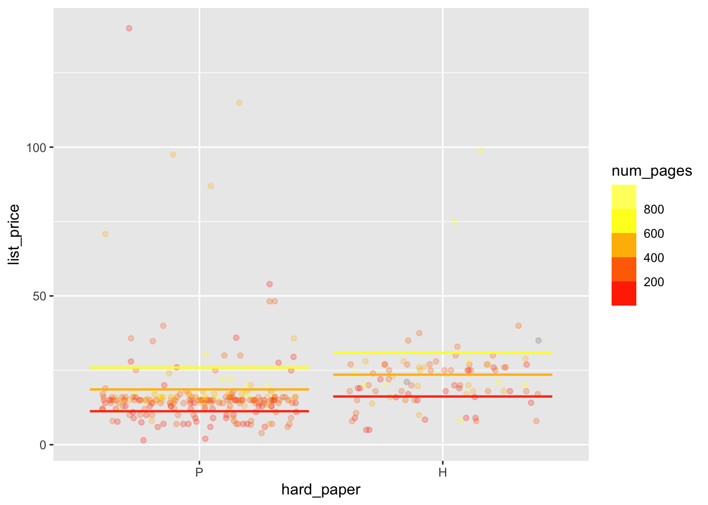

mosaicData::Galton |>
summarize(vmother = var(mother), vfather = var(father)) vmother vfather
1 5.322365 6.10216419.1. [Conceptual] Master the use and units of variance and standard deviation in measuring variability.
19.2. [Conceptual] Understand the equivalence between mean and proportion on a zero-one variable.
19.3. [Technical] Use var() and sd() within summarize()
19.4. [Technical] Use model_plot() to graph models with one or two explanatory variables.
19.5. [Technical] Use zero_one() with mutate() to create a zero-one variable.
In the first half of Math 300Z, the daily student notes were largely structured around “scaffolded” R code, which often involved filling in the blanks. In this second half of 300Z, we will start to use a new way of helping you construct appropriate R command. We call this “command patterns. For instance,
DF %>% summarize(NM=var(VAR)) is a command pattern.
One reason for the shift to the command-pattern style is that there will be only a handful of new patterns in the second half of the course that you’ll be using over and over again. Another reason is to help you develop “finger memory” for the most common patterns. An analogy: scaffolding is like GPS navigation which certainly makes it easier to drive but harder to get to know the town. Command patterns are like a paper map, there to help you when you need it.
There is a specific notation for command patterns, which you should memorize. Instead of the blanks used in a scaffold, the command pattern uses a CAPITALIZED abbreviation for the **kind of thing* that should be put in the position. Common kinds of thing are
DF: a data frame, almost always referred to by name.VAR: a variable in a data frame. Many command patterns involve multiple variables, each of which is referred to by VAR. You will replace each VAR with the appropriate variable name.VARS: one or more variable names. When these are the right-hand side of a tilde expression, separate the names with + punctuation. When we mean to indicate that there is only one variable, we use VAR instead of VARS. If we want to say, “use two variables,” we would write VAR + VAR.MODEL refers to the name of a model that you have previously constructed with lm().NM means a name that you will be calling something by. For instance, NM <- lm(VAR ~ VARS, data=DF). Another occasion for using NM is as part of an argument to summarize() or mutate().[, MORE] means that you can have multiple additional arguments of the same form as the previous argument.VALUE a number, quoted string (e.g., "red"), or multiple values inside c( ).MODSPEC is a model specification, which could equally well be written VAR ~ VARSAnything in a command pattern that is not a CAPITALIZED abbreviation is a specific part of the command to be used as-is. For instance, lm(VAR ~ VARS, data=DF) refers explicitly to the lm() function whose first argument is a tilde expression and whose second argument is named data.
Occasionally, you will refer to a data frame by naming the package from which it comes. For example, the moderndive package includes (among many others) the amazon_books data frame. Think of amazon_books as a first name, and moderndive as a family name. When you see PACKAGE::DF it is meant to indicate, for instance, moderndive::amazon_books. (Note that the :: in the command pattern is to be taken literally; there are two successive colons separating the package name from the name of the data frame.)
Command patterns:
DF %>% summarize(NM = var(VAR)) Calculate variance of a variable in a data frame.PACKAGE::DF The name of a data frame within a package.mosaicData::Galton data frame, find the variance of mother and father. Give both the numerical value and the units.mosaicData::Galton |>
summarize(vmother = var(mother), vfather = var(father)) vmother vfather
1 5.322365 6.102164The units for both are `inches-squared” since the variables themselves have units “inches.”
moderndive::amazon_books data frame, find the variance of list_price and num_pages. Give both the numerical value and the units.moderndive::amazon_books |>
summarize(vprice = var(list_price), vpages = var(num_pages))# A tibble: 1 × 2
vprice vpages
<dbl> <dbl>
1 NA NAThe units of list_price are dollars, so the variance has units “square-dollars”.
num_pages is dimensionless, so the variance is also dimensionless.
sex from Galton. If something goes wrong, explain why.Galton |> summarize(vsex = var(sex))Error in `summarize()`:
! Problem while computing `vsex = var(sex)`.
Caused by error in `stats::var()`:
! Calling var(x) on a factor x is defunct.
Use something like 'all(duplicated(x)[-1L])' to test for a constant vector.sex is a categorical variable. There’s no such thing as the variance of a categorical variable.
Command patterns:
NM <- lm(VAR ~ VARS, data = DF)lm(VAR ~ VARS, data=DF) %>% conf_interval()lm(MODSPEC, data=DF) %>% conf_interval() means the same as (b).conf_interval(). (Hint: It’s the same kind of thing as lm().)conf_interval() is a function.
moderndive::amazonbooks data frame, fit the model list_price ~ num_pages:
num_pages. Give both the numerical bounds and the units.The intercept always has the same units as the response variable. Here, that’s dollars.
lm(list_price ~ num_pages, data = moderndive::amazon_books) |>
conf_interval()# A tibble: 2 × 4
term .lwr .coef .upr
<chr> <dbl> <dbl> <dbl>
1 (Intercept) 8.33 11.8 15.4
2 num_pages 0.0105 0.0199 0.0293Coefficient on num_pages: .02 dollars per page. Multiplying the coefficient by the number of pages will give dollars: the units of the response variable.
list_price ~ numpages + hard_paper
hard_paperH refer to?lm(list_price ~ num_pages + hard_paper, data = moderndive::amazon_books) |>
conf_interval()# A tibble: 3 × 4
term .lwr .coef .upr
<chr> <dbl> <dbl> <dbl>
1 (Intercept) 7.04 10.6 14.2
2 num_pages 0.0102 0.0196 0.0289
3 hard_paperH 1.56 4.96 8.36 hard_paperH refers to the H level of the hard_paper variable. According to the model, a hardback costs $4.96 more than a paperback, on average.
mod3. We’ll use it in the next part. For your answer, put the R command you used to store the model as mod3.Note that we are asked to store the model itself, not the confidence interval.
mod3 <- lm(list_price ~ num_pages + hard_paper, data = moderndive::amazon_books) Command patterns:
ggplot(DF, aes(x=VAR, y=VAR)) + geom_jitter()ggplot(DF, aes(x=VAR, y=VAR)) + geom_jitter() + geom_violin(fill="blue", alpha=0.3)ggplot(DF, aes(x="all", y=VAR)) + geom_jitter()model_plot(MODEL, x=VAR)model_plot(MODAL, x=VAR, color=VAR)list_price ~ hard_paper from moderndive::amazon_books.moderndive::amazon_books |>
ggplot(aes(x=hard_paper, y = list_price)) +
geom_jitter(alpha=0.5)Warning: Removed 1 rows containing missing values (`geom_point()`).
+ geom_violin(fill="blue", alpha=0.3)moderndive::amazon_books |>
ggplot(aes(x=hard_paper, y = list_price)) +
geom_jitter(alpha=0.5) +
geom_violin(fill="blue", alpha=0.3)Warning: Removed 1 rows containing non-finite values (`stat_ydensity()`).Warning: Removed 1 rows containing missing values (`geom_point()`).
model_plot() to draw a picture of mod3. Set x=hard_paper and num_pages=200. What do you think the horizontal line segments refer to?model_plot(mod3, x=hard_paper, num_pages=200)
The vertical position of the horizontal lines indicates the model output for books with 200 pages.
num_pages = 200. Instead, set x=num_pages and color=hard_paper. Explain the meaning of the line segments in everyday terms.model_plot(mod3, x=hard_paper, color=num_pages)
The parallel line segments in each column show the model output for books with 200, 400, and 600 pages respectively.